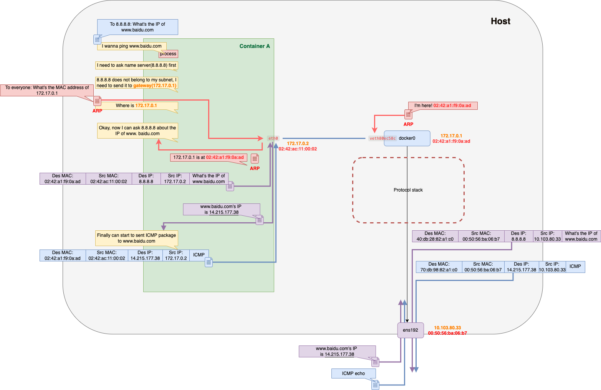

Networking of Docker is a topic that I always want to talk about, so in the upcoming several About Docker network posts, including this one, I will try to introduce different networking modes of Docker and explain how it works based on some experiments I’ve made.
This blog post is focus on Docker’s none, host and bridege network modes, others will be talked about in next posts.
Overview
According to docker’s official document, docker’s networking subsystem(libnetwork) is portable, it’s using driver to provide networking functionality. Currently, these drivers exist by default:
- bridge
- host
- overlay
- ipvlan
- macvlan
If we use docker network ls command to list networks offered by docker by default we can see:
$ docker network ls
NETWORK ID NAME DRIVER SCOPE
2fd34f93b369 bridge bridge local
8e489d56f4d5 host host local
2f7960394c0f none null localNone, host, and bridge network are created by default once docker starts. host and bridge network is using host and bridge driver respectively mentioned above while none network is created without network driver. These three networks will be discussed in this article mainly about how containers will act when they are connected to different networks.
None
Containers that are connected to none network will not have an external network interface:
# Create a container with `none` network mode
$ docker run --rm -dit --network none --name no-net-alpine alpine:latest ash
# Check container's network
$ docker exec no-net-alpine ip link show
1: lo: <LOOPBACK,UP,LOWER_UP> mtu 65536 qdisc noqueue state UNKNOWN qlen 1000
link/loopback 00:00:00:00:00:00 brd 00:00:00:00:00:00Container with this mode of networking will only have a loopback interface, which means that it’s unable to send messages to other containers or external networks.
Host
Before we create a new container, we can inspect the network interface of the host first:
# Local host
$ ifconfig
docker0: flags=4099<UP,BROADCAST,MULTICAST> mtu 1500
inet 172.17.0.1 netmask 255.255.0.0 broadcast 172.17.255.255
...
ens192: flags=4163<UP,BROADCAST,RUNNING,MULTICAST> mtu 1500
...
lo: flags=73<UP,LOOPBACK,RUNNING> mtu 65536
inet 127.0.0.1 netmask 255.0.0.0
...
Then, let’s create a new container and connect it to the host network:
# Create a new container with host network mode
$ docker run --rm -dit --network host --name host-alpine alpine:latest ash
# Access to new container
$ docker exec -it host-alpine /bin/sh
# Container host-alpine
$ ifconfig
docker0 Link encap:Ethernet HWaddr 02:42:D3:3C:90:82
inet addr:172.17.0.1 Bcast:172.17.255.255 Mask:255.255.0.0
...
ens192 Link encap:Ethernet HWaddr 00:50:56:BA:06:B7
...
lo Link encap:Local Loopback
inet addr:127.0.0.1 Mask:255.0.0.0
...According to the container shown above, we can observe that this new container has exact same network interfaces as the host which means that, it shares the host’s networking namespaces.
We can just consider it a normal app running on our computer. For example, we can also create an Nginx container with host network:
# Host (No need to add --p to expose port 80 when using host network)
$ docker run --rm -d --network host --name my_nginx nginxThen we can try to sent request to Nginx from Container host-alpine:
# Access previous host container(host-alpine)
$ docker exec -it host-alpine /bin/sh
# Container host-alpine
$ curl localhost:80
<!DOCTYPE html>
...Since container my_nginx and host-alpine are all connecting to host network, they all share the host’s network namespace, so that host-alpine can directly use localhost:80 to send requests to my_nginx.
Bridge
About Bridge mode
Bridge is the default network driver of docker.
When we talk about bridge network, we are talking about a Link Layer device(a hardware device or a software device) that forwards traffic between network segments.
In Docker, a software bridge is used for containers to connect to the same bridge network in order to communicate with each other.
Before we start to create a container with bridge network type, we can check the initial state of our local environment first:
# Inspect the ethernet bridge configuration
$ brctl show
bridge name bridge id STP enabled interfaces
docker0 8000.02428ab4554d no
$ ip link show
...
3: docker0: <NO-CARRIER,BROADCAST,MULTICAST,UP> mtu 1500 qdisc noqueue state DOWN mode DEFAULT group default
link/ether 02:42:8a:b4:55:4d brd ff:ff:ff:ff:ff:ff
...
# Show IP routing table
$ route -n
Destination Gateway Genmask Flags Metric Ref Use Iface
0.0.0.0 10.103.226.1 0.0.0.0 UG 100 0 0 ens192
10.103.226.0 0.0.0.0 255.255.255.0 U 100 0 0 ens192
172.17.0.0 0.0.0.0 255.255.0.0 U 0 0 0 docker0Create container with bridge mode(default):
Then we can start to create a container:
# Create a container with `bridge` network type
$ docker run --rm -dit --name bridge-alpine alpine ash
# Check ips of container
$ docker exec bridge-alpine ip addr
1: lo: <LOOPBACK,UP,LOWER_UP> mtu 65536 qdisc noqueue state UNKNOWN qlen 1000
link/loopback 00:00:00:00:00:00 brd 00:00:00:00:00:00
inet 127.0.0.1/8 scope host lo
valid_lft forever preferred_lft forever
7: eth0@if8: <BROADCAST,MULTICAST,UP,LOWER_UP,M-DOWN> mtu 1500 qdisc noqueue state UP
link/ether 02:42:ac:11:00:02 brd ff:ff:ff:ff:ff:ff
inet 172.17.0.2/16 brd 172.17.255.255 scope global eth0
valid_lft forever preferred_lft foreverCompared to the previous container with none network mode, this new container has one more network interface eth0 and got an ip 172.17.0.2.
Then we can check the network state of the current environment:
# Inspect the ethernet bridge configuration
$ brctl show
bridge name bridge id STP enabled interfaces
docker0 8000.0242a1f90aad no veth80ec58c
$ ip link show
...
3: docker0: <BROADCAST,MULTICAST,UP,LOWER_UP> mtu 1500 qdisc noqueue state UP mode DEFAULT group default
link/ether 02:42:8a:b4:55:4d brd ff:ff:ff:ff:ff:ff
8: veth80ec58c@if7: <BROADCAST,MULTICAST,UP,LOWER_UP> mtu 1500 qdisc noqueue master docker0 state UP mode DEFAULT group default
link/ether 0e:e2:2d:20:d2:ad brd ff:ff:ff:ff:ff:ff link-netnsid 1Apparently, now that there’s a new interface veth80ec58c who is connecting to docker0. And also this new interface(veth80ec58c) and interface 7 (shown in the container as interface eth0) are two connected endpoints of a veth pair that act as tunnels between network namespaces.
Communication between pods
Now that we can create another two containers bridge-alpine2 and bridge-alpine3:
# Create a new container
$ docker run --rm -dit --name bridge-alpine2 alpine ash
$ docker run --rm -dit --name bridge-alpine3 alpine ashThen we can observe that there’re two new interfaces that are connecting to docker0:
$ brctl show
bridge name bridge id STP enabled interfaces
docker0 8000.0242a1f90aad no veth4a318ba
veth80ec58c
vethd234967 We are going to ping container bridge-alpine from container bridge-alpine2 using its IP (172.17.0.2) to observe the communication between pods.:
$ docker exec -it bridge-alpine2 /bin/sh
# Inside container bridge-alpine2(172.17.0.3)
$ ping 172.17.0.2
PING 172.17.0.2 (172.17.0.2): 56 data bytes
64 bytes from 172.17.0.2: seq=0 ttl=64 time=0.333 ms
64 bytes from 172.17.0.2: seq=1 ttl=64 time=0.151 ms
# Host
# Capture package from docker0
$ tcpdump -i docker0 -v -nn -e -t
tcpdump: listening on docker0, link-type EN10MB (Ethernet), capture size 262144 bytes
02:42:ac:11:00:03 > **ff:ff:ff:ff:ff:ff**, ethertype ARP (0x0806), length 42: Ethernet (len 6), IPv4 (len 4), Request who-has 172.17.0.2 tell 172.17.0.3, length 28
02:42:ac:11:00:02 > 02:42:ac:11:00:03, ethertype ARP (0x0806), length 42: Ethernet (len 6), IPv4 (len 4), Reply 172.17.0.2 is-at 02:42:ac:11:00:02, length 28
02:42:ac:11:00:03 > 02:42:ac:11:00:02, ethertype IPv4 (0x0800), length 98: (tos 0x0, ttl 64, id 7910, offset 0, flags [DF], proto ICMP (1), length 84)
172.17.0.3 > 172.17.0.2: ICMP echo request, id 16, seq 0, length 64
02:42:ac:11:00:02 > 02:42:ac:11:00:03, ethertype IPv4 (0x0800), length 98: (tos 0x0, ttl 64, id 59835, offset 0, flags [none], proto ICMP (1), length 84)
172.17.0.2 > 172.17.0.3: ICMP echo reply, id 16, seq 0, length 64
02:42:ac:11:00:03 > 02:42:ac:11:00:02, ethertype IPv4 (0x0800), length 98: (tos 0x0, ttl 64, id 7986, offset 0, flags [DF], proto ICMP (1), length 84)
# Container bridge-alpine2
$ tcpdump -i veth4a318ba -v -nn -e -t
02:42:ac:11:00:03 > ff:ff:ff:ff:ff:ff, ethertype ARP (0x0806), length 42: Ethernet (len 6), IPv4 (len 4), Request who-has 172.17.0.2 tell 172.17.0.3, length 28
02:42:ac:11:00:02 > 02:42:ac:11:00:03, ethertype ARP (0x0806), length 42: Ethernet (len 6), IPv4 (len 4), Reply 172.17.0.2 is-at 02:42:ac:11:00:02, length 28
02:42:ac:11:00:03 > 02:42:ac:11:00:02, ethertype IPv4 (0x0800), length 98: (tos 0x0, ttl 64, id 56762, offset 0, flags [DF], proto ICMP (1), length 84)
172.17.0.3 > 172.17.0.2: ICMP echo request, id 17, seq 0, length 64
02:42:ac:11:00:02 > 02:42:ac:11:00:03, ethertype IPv4 (0x0800), length 98: (tos 0x0, ttl 64, id 55430, offset 0, flags [none], proto ICMP (1), length 84)
172.17.0.2 > 172.17.0.3: ICMP echo reply, id 17, seq 0, length 64
# Container bridge-alpine
$ tcpdump -i veth80ec58c -v -nn -e -t
tcpdump: listening on veth80ec58c, link-type EN10MB (Ethernet), capture size 262144 bytes
02:42:ac:11:00:03 > ff:ff:ff:ff:ff:ff, ethertype ARP (0x0806), length 42: Ethernet (len 6), IPv4 (len 4), Request who-has 172.17.0.2 tell 172.17.0.3, length 28
02:42:ac:11:00:02 > 02:42:ac:11:00:03, ethertype ARP (0x0806), length 42: Ethernet (len 6), IPv4 (len 4), Reply 172.17.0.2 is-at 02:42:ac:11:00:02, length 28
02:42:ac:11:00:03 > 02:42:ac:11:00:02, ethertype IPv4 (0x0800), length 98: (tos 0x0, ttl 64, id 7910, offset 0, flags [DF], proto ICMP (1), length 84)
172.17.0.3 > 172.17.0.2: ICMP echo request, id 16, seq 0, length 64
02:42:ac:11:00:02 > 02:42:ac:11:00:03, ethertype IPv4 (0x0800), length 98: (tos 0x0, ttl 64, id 59835, offset 0, flags [none], proto ICMP (1), length 84)
172.17.0.2 > 172.17.0.3: ICMP echo reply, id 16, seq 0, length 64
# Container bridge-alpine3
$ tcpdump -i vethd234967 -v -nn -e -t
tcpdump: listening on vethd234967, link-type EN10MB (Ethernet), capture size 262144 bytes
02:42:ac:11:00:03 > ff:ff:ff:ff:ff:ff, ethertype ARP (0x0806), length 42: Ethernet (len 6), IPv4 (len 4), Request who-has 172.17.0.2 tell 172.17.0.3, length 28Network traffic analysis
According to the results that are shown above, the process is a bit different:
- Use ARP to get the MAC address of the target container：
# bridge-alpine2 container
$ route -n
Kernel IP routing table
Destination Gateway Genmask Flags Metric Ref Use Iface
0.0.0.0 172.17.0.1 0.0.0.0 UG 0 0 0 eth0
172.17.0.0 0.0.0.0 255.255.0.0 U 0 0 0 eth0According to the IP routing table of container bridge-alpine2 shown above, when the container wants to ping another container in the same subnet(172.17.0.0/16), the message can be directly sent to them, instead of being sent to the gateway. But it needs to know the MAC address of the target container first.
# bridge-alpine2's packages
02:42:ac:11:00:03 > ff:ff:ff:ff:ff:ff, ethertype ARP (0x0806), length 42: Ethernet (len 6), IPv4 (len 4), Request who-has 172.17.0.2 tell 172.17.0.3, length 28
02:42:ac:11:00:02 > 02:42:ac:11:00:03, ethertype ARP (0x0806), length 42: Ethernet (len 6), IPv4 (len 4), Reply 172.17.0.2 is-at 02:42:ac:11:00:02, length 28
# docker0's packcages
02:42:ac:11:00:03 > **ff:ff:ff:ff:ff:ff**, ethertype ARP (0x0806), length 42: Ethernet (len 6), IPv4 (len 4), Request who-has 172.17.0.2 tell 172.17.0.3, length 28
02:42:ac:11:00:02 > 02:42:ac:11:00:03, ethertype ARP (0x0806), length 42: Ethernet (len 6), IPv4 (len 4), Reply 172.17.0.2 is-at 02:42:ac:11:00:02, length 28
# bridge-alpine's packages
02:42:ac:11:00:03 > **ff:ff:ff:ff:ff:ff**, ethertype ARP (0x0806), length 42: Ethernet (len 6), IPv4 (len 4), Request who-has 172.17.0.2 tell 172.17.0.3, length 28
02:42:ac:11:00:02 > 02:42:ac:11:00:03, ethertype ARP (0x0806), length 42: Ethernet (len 6), IPv4 (len 4), Reply 172.17.0.2 is-at 02:42:ac:11:00:02, length 28
# bridge-alpine3's packages
02:42:ac:11:00:03 > **ff:ff:ff:ff:ff:ff**, ethertype ARP (0x0806), length 42: Ethernet (len 6), IPv4 (len 4), Request who-has 172.17.0.2 tell 172.17.0.3, length 28So, from the content shown above, we can observe that the container broadcasted the ARP message using the broadcast MAC address(ff:ff:ff:ff:ff:ff). ARP request will be sent to all the containers which are connecting to docker0, but only the target container bridge-alpine(172.17.0.2) replied with its MAC address(02:42:ac:11:00:02).
- Send packages (ICMP)
# bridge-alpine2's packages
02:42:ac:11:00:03 > 02:42:ac:11:00:02, ethertype IPv4 (0x0800), length 98: (tos 0x0, ttl 64, id 56762, offset 0, flags [DF], proto ICMP (1), length 84)
172.17.0.3 > 172.17.0.2: ICMP echo request, id 17, seq 0, length 64
02:42:ac:11:00:02 > 02:42:ac:11:00:03, ethertype IPv4 (0x0800), length 98: (tos 0x0, ttl 64, id 55430, offset 0, flags [none], proto ICMP (1), length 84)
172.17.0.2 > 172.17.0.3: ICMP echo reply, id 17, seq 0, length 64
# docker0's packages
02:42:ac:11:00:03 > 02:42:ac:11:00:02, ethertype IPv4 (0x0800), length 98: (tos 0x0, ttl 64, id 7910, offset 0, flags [DF], proto ICMP (1), length 84)
172.17.0.3 > 172.17.0.2: ICMP echo request, id 16, seq 0, length 64
02:42:ac:11:00:02 > 02:42:ac:11:00:03, ethertype IPv4 (0x0800), length 98: (tos 0x0, ttl 64, id 59835, offset 0, flags [none], proto ICMP (1), length 84)
172.17.0.2 > 172.17.0.3: ICMP echo reply, id 16, seq 0, length 64
# bridge-alpine's packages
02:42:ac:11:00:03 > 02:42:ac:11:00:02, ethertype IPv4 (0x0800), length 98: (tos 0x0, ttl 64, id 7910, offset 0, flags [DF], proto ICMP (1), length 84)
172.17.0.3 > 172.17.0.2: ICMP echo request, id 16, seq 0, length 64
02:42:ac:11:00:02 > 02:42:ac:11:00:03, ethertype IPv4 (0x0800), length 98: (tos 0x0, ttl 64, id 59835, offset 0, flags [none], proto ICMP (1), length 84)
172.17.0.2 > 172.17.0.3: ICMP echo reply, id 16, seq 0, length 64With the IP and MAC address, now container bridge-alpine2 can start to send IMCP messages to container bridge-alpine:
Communicate with external network
Let’s see what will happen if this container tries to access an external network. The original state of the local environment is shown below:
# Show the system ARP cache
$ arp -v
Address HWtype HWaddress Flags Mask Iface
gateway ether 70:db:98:82:a1:c0 C ens192Container bridge-alpine2 and bridge-alpine3 have been removed from the local host.
We can ping a website from a container and use tcpdump to catch the packets during this process:
# Ping a website from container with bridge network type
$ docker exec bridge-alpine ping www.baidu.com
PING www.baidu.com (103.235.46.40): 56 data bytes
64 bytes from 103.235.46.40: seq=1 ttl=40 time=186.518 ms
64 bytes from 103.235.46.40: seq=2 ttl=40 time=187.523 ms
...
# Get packets from one of the endpoints of the veth pairs which connects
# container's network namespace and docker0
$ tcpdump -i veth80ec58c -v -nn -e
02:42:ac:11:00:02 > 02:42:a1:f9:0a:ad, ethertype ARP (0x0806), length 42: Ethernet (len 6), IPv4 (len 4), Request who-has **172.17.0.1** tell 172.17.0.2, length 28
02:42:a1:f9:0a:ad > 02:42:ac:11:00:02, ethertype ARP (0x0806), length 42: Ethernet (len 6), IPv4 (len 4), Reply 172.17.0.1 is-at **02:42:a1:f9:0a:ad**, length 2806:38:42.580163 ARP, Reply localhost.localdomain is-at 02:42:8a:b4:55:4d (oui Unknown), length 28
02:42:ac:11:00:02 > **02:42:a1:f9:0a:ad**, ethertype IPv4 (0x0800), length 73: (tos 0x0, ttl 64, id 46041, offset 0, flags [DF], proto UDP (17), length 59)
172.17.0.2.37221 > 8.8.8.8.53: 28492+ A? www.baidu.com. (31)
02:42:ac:11:00:02 > **02:42:a1:f9:0a:ad**, ethertype IPv4 (0x0800), length 73: (tos 0x0, ttl 64, id 53494, offset 0, flags [DF], proto UDP (17), length 59)
172.17.0.2.37221 > 8.8.4.4.53: 28492+ A? www.baidu.com. (31)
02:42:ac:11:00:02 > **02:42:a1:f9:0a:ad**, ethertype IPv4 (0x0800), length 73: (tos 0x0, ttl 64, id 46042, offset 0, flags [DF], proto UDP (17), length 59)
172.17.0.2.37221 > 8.8.8.8.53: 29411+ AAAA? www.baidu.com. (31)
02:42:ac:11:00:02 > **02:42:a1:f9:0a:ad**, ethertype IPv4 (0x0800), length 73: (tos 0x0, ttl 64, id 53495, offset 0, flags [DF], proto UDP (17), length 59)
172.17.0.2.37221 > 8.8.4.4.53: 29411+ AAAA? www.baidu.com. (31)
**02:42:a1:f9:0a:ad** > 02:42:ac:11:00:02, ethertype IPv4 (0x0800), length 132: (tos 0x20, ttl 101, id 57650, offset 0, flags [none], proto UDP (17), length 118)
8.8.8.8.53 > 172.17.0.2.37221: 28492 3/0/0 www.baidu.com. CNAME www.a.shifen.com., www.a.shifen.com. A 14.215.177.38, www.a.shifen.com. A 14.215.177.39 (90)
**02:42:a1:f9:0a:ad** > 02:42:ac:11:00:02, ethertype IPv4 (0x0800), length 157: (tos 0x20, ttl 101, id 29948, offset 0, flags [none], proto UDP (17), length 143)
8.8.8.8.53 > 172.17.0.2.37221: 29411 1/1/0 www.baidu.com. CNAME www.a.shifen.com. (115)
02:42:ac:11:00:02 > **02:42:a1:f9:0a:ad**, ethertype IPv4 (0x0800), length 98: (tos 0x0, ttl 64, id 31149, offset 0, flags [DF], proto ICMP (1), length 84)
172.17.0.2 > 14.215.177.38: ICMP echo request, id 69, seq 0, length 64
**02:42:a1:f9:0a:ad** > 02:42:ac:11:00:02, ethertype IPv4 (0x0800), length 98: (tos 0x20, ttl 51, id 31149, offset 0, flags [DF], proto ICMP (1), length 84)
14.215.177.38 > 172.17.0.2: ICMP echo reply, id 69, seq 0, length 64Network traffic analysis
There’re several steps shown in this process, let’s go through them one by one:
- Use ARP to get the MAC address of the gateway：
# bridge-alpine container
$ route -n
Kernel IP routing table
Destination Gateway Genmask Flags Metric Ref Use Iface
0.0.0.0 172.17.0.1 0.0.0.0 UG 0 0 0 eth0
172.17.0.0 0.0.0.0 255.255.0.0 U 0 0 0 eth0Different from communicating with containers also connecting to docker0, Both DNS/ICMP messages need to be sent to external networks. In this case, according to the table shown above, container bridge-alpine should directly send messages to the gateway(172.17.0.1)
Somehow knowing the IP of the gateway is not enough for the packages to be delivered, they need the MAC address as well, so that the container used ARP to ask for the MAC address of the gateway(do not need to board cast):
02:42:ac:11:00:02 > 02:42:a1:f9:0a:ad, ethertype ARP (0x0806), length 42: Ethernet (len 6), IPv4 (len 4), Request who-has **172.17.0.1** tell 172.17.0.2, length 28
02:42:a1:f9:0a:ad > 02:42:ac:11:00:02, ethertype ARP (0x0806), length 42: Ethernet (len 6), IPv4 (len 4), Reply 172.17.0.1 is-at **02:42:a1:f9:0a:ad**, length 2806:38:42.580163 ARP, Reply localhost.localdomain is-at 02:42:8a:b4:55:4d (oui Unknown), length 28According to what we’ve got previously, the MAC address 02:42:a1:f9:0a:ad the container got from ARP is the MAC address of docker0 on the host computer:
$ ip link show
...
3: docker0: <NO-CARRIER,BROADCAST,MULTICAST,UP> mtu 1500 qdisc noqueue state DOWN mode DEFAULT group default
link/ether **02:42:8a:b4:55:4d** brd ff:ff:ff:ff:ff:ff
...- Resolve domain name (DNS)：
Also, the container needs to know the IP address of the target website, so that it will ask the name server(8.8.8.8) in order to resolve the domain name:
02:42:ac:11:00:02 > **02:42:a1:f9:0a:ad**, ethertype IPv4 (0x0800), length 73: (tos 0x0, ttl 64, id 46041, offset 0, flags [DF], proto UDP (17), length 59)
172.17.0.2.37221 > 8.8.8.8.53: 28492+ A? www.baidu.com. (31)
02:42:ac:11:00:02 > **02:42:a1:f9:0a:ad**, ethertype IPv4 (0x0800), length 73: (tos 0x0, ttl 64, id 53494, offset 0, flags [DF], proto UDP (17), length 59)
172.17.0.2.37221 > 8.8.4.4.53: 28492+ A? www.baidu.com. (31)
02:42:ac:11:00:02 > **02:42:a1:f9:0a:ad**, ethertype IPv4 (0x0800), length 73: (tos 0x0, ttl 64, id 46042, offset 0, flags [DF], proto UDP (17), length 59)
172.17.0.2.37221 > 8.8.8.8.53: 29411+ AAAA? www.baidu.com. (31)
02:42:ac:11:00:02 > **02:42:a1:f9:0a:ad**, ethertype IPv4 (0x0800), length 73: (tos 0x0, ttl 64, id 53495, offset 0, flags [DF], proto UDP (17), length 59)
172.17.0.2.37221 > 8.8.4.4.53: 29411+ AAAA? www.baidu.com. (31)
**02:42:a1:f9:0a:ad** > 02:42:ac:11:00:02, ethertype IPv4 (0x0800), length 132: (tos 0x20, ttl 101, id 57650, offset 0, flags [none], proto UDP (17), length 118)
8.8.8.8.53 > 172.17.0.2.37221: 28492 3/0/0 www.baidu.com. CNAME www.a.shifen.com., www.a.shifen.com. A 14.215.177.38, www.a.shifen.com. A 14.215.177.39 (90)
**02:42:a1:f9:0a:ad** > 02:42:ac:11:00:02, ethertype IPv4 (0x0800), length 157: (tos 0x20, ttl 101, id 29948, offset 0, flags [none], proto UDP (17), length 143)
8.8.8.8.53 > 172.17.0.2.37221: 29411 1/1/0 www.baidu.com. CNAME www.a.shifen.com. (115)I’m not going to talk about the detail of DNS in this article. We only need to know that eventually, the container knew that the target IP is 14.215.177.38.
- Send packages (ICMP):
Now that the container’s already got the IP address of the target website and the MAC address of the gateway, it can send all the ICMP packages now:
02:42:ac:11:00:02 > **02:42:a1:f9:0a:ad**, ethertype IPv4 (0x0800), length 98: (tos 0x0, ttl 64, id 31149, offset 0, flags [DF], proto ICMP (1), length 84)
172.17.0.2 > 14.215.177.38: ICMP echo request, id 69, seq 0, length 64
**02:42:a1:f9:0a:ad** > 02:42:ac:11:00:02, ethertype IPv4 (0x0800), length 98: (tos 0x20, ttl 51, id 31149, offset 0, flags [DF], proto ICMP (1), length 84)
14.215.177.38 > 172.17.0.2: ICMP echo reply, id 69, seq 0, length 64If we also use tcpdump to catch the package from ens192, we will get these contents:
$ tcpdump -i ens192 -v -nn -e -t host 14.215.177.38
00:50:56:ba:06:b7 > 70:db:98:82:a1:c0, ethertype IPv4 (0x0800), length 98: (tos 0x0, ttl 63, id 13766, offset 0, flags [DF], proto ICMP (1), length 84)
10.103.80.33 > 14.215.177.38: ICMP echo request, id 113, seq 20, length 64
70:db:98:82:a1:c0 > 00:50:56:ba:06:b7, ethertype IPv4 (0x0800), length 98: (tos 0x20, ttl 41, id 13766, offset 0, flags [DF], proto ICMP (1), length 84)
45.113.192.101 > 10.103.80.33: ICMP echo reply, id 113, seq 20, length 64The whole process can be shown as:
